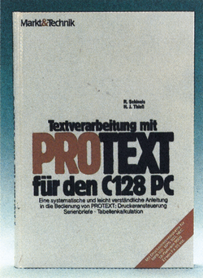
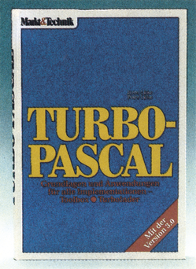
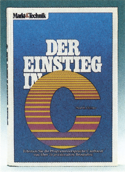
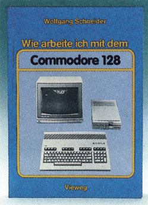

Bücher zum C 128
Textverarbeitung mit Protext für den C 128 PC

Die Autoren Rudolf Schineis und Hans-Jürgen Thies, beide selbst aktive Programmierer, haben in dem soeben erschienenen Werk ihr Konzept von einer Einführung für Textverarbeitungsneulinge bis hin zu Tips und Tricks für den Profi konsequent durchgehalten. Auch der fortgeschrittene Anwender findet viel Information über die Feinheiten beim Umgang mit Protext 128. In dieser Manier werden zuerst die benötigten Systemkomponenten, die Protext 128 voraussetzt, vorgestellt und die ersten Schritte in dieses hervorragende Textverarbeitungsprogramm unternommen, zum Beispiel das Erstellen einer Arbeitsdiskette. In den folgenden beiden Kapiteln lernt der frischgebackene Anwender von Protext 128 alle Textfunktionen, Korrekturmöglichkeiten und vieles mehr kennen. Am Ende des vierten Kapitels ist der Textverarbeitungsneuling in der Lage, einen perfekten Brief nach eigenen Wünschen zu gestalten. Die folgenden Kapitel wenden sich an den (nun) Fortgeschrittenen: Serienbriefe, trickreiche Anschriftenverwaltung, Module, Jobs, Phrasen und Makros. Hier wird gezeigt, wie leistungsfähig mit einem ausgereiften Textverarbeitungssystem gearbeitet werden kann, ohne daß die Tätigkeiten am C 128 zur tatsächlichen Arbeit werden. In der zweiten Hälfte dieses Buches werden wichtige Gebiete, wie etwa der Terminal-Modus in Protext 128, Datenaustausch mit anderen Programmen, alles um den Druckertreiber sowie Sonderfunktionen des Programms vorgestellt, die weit über die Textverarbeitungsnorm hinausgehen. Als sehr hilfreich bei der Arbeit mit Protext 128 stellt sich die alphabetische Befehlsübersicht im Anhang C heraus. Die beiden größten Pluspunkte sammelt dieses Werk sowohl durch die beiliegende Diskette mit Demotexten und Druckertreibern (zum Beispiel für MPS 801, MPS 803, NEC, TA-Gabriele 9009, Epson FX 85) sowie dem Komplettpreis für Buch und Diskette von sage und schreibe 39 Mark.
Fazit: Sehr empfehlenswert für alle Protext-128-Anwender.
(E. Schwab/bj)Info: R. Schineis/H.J. Thies, Textverarbeitung mit Protext für den C 128 PC, Markt&Technik Verlag, 258 Seiten, ISBN 3-89090-375-4, Preis: 39 Mark einschließlich Zusatzdiskette
Turbo-Pascal

Die Autoren Irene und Peter Lüke legten in diesem Buch besonderen Wert darauf, den Leser ohne besondere Vorkenntnisse in Turbo-Pascal einzuführen. Dabei werden alle Turbo-Pascal-Versionen bis 3.0 unter CP/M und unter MS-DOS berücksichtigt. Die Sprachelemente wie Variablentypen, Funktionen und Prozeduren, die in Turbo-Pascal bereits definiert sind, werden anhand von Beispielen vorgestellt und in Abfolge ihrer Verwendung beschrieben. Als Ergebnis des Lernteils dieses Buches erhält der Anwender ein Farbkombinationsspiel nach Art von »Master-Mind«, ausführliche Kenntnisse über dessen Aufbau, die Möglichkeiten der strukturierten Programmierung in Turbo-Pascal sowie über den Umgang mit den Compiler-Funktionen überhaupt. Taucht etwa im Spiel ein Variablentyp auf, so werden die Variablenarten allgemein besprochen. Weitere Kapitel des Buches sind beispielsweise den Ein- und Ausgabefunktionen, Strukturanweisungen (begin/end, do/until etc.), Dateiverwaltung (Records), Mengentypen (Sets) und Texttypen (Files) gewidmet. Weiterhin wird ausführlich auf die Turbo-Tools (etwa Turbo-Grafik) und die Funktionen des Turbo-Pascal-Editors eingegangen. Bedauerlicherweise wurde keine alphabetisch geordnete und dokumentierte Befehlsübersicht in dieses Buch aufgenommen, wodurch sich der Wert als Nachschlagewerk reduziert. Insgesamt kann dieses Buch jedoch jedem Einsteiger in Turbo-Pascal empfohlen werden.
(K. Steinmetz/rf/bj)Info: Irene und Peter Lüke, Turbo-Pascal, Markt&Technik Verlag, 290 Seiten, ISBN 3-89090-150-6, Preis: 49 Mark
Der Einstieg in C

Keinerlei Grundwissen setzt Paul M. Chirlian beim Leser voraus. Am Anfang des Buches werden sogar noch grundlegende Dinge zum Thema Computer angesprochen. Über viele Beispiele wird der Lernende an die Programmiersprache »C« herangeführt und lernt nach und nach alle Elemente dieser zwar leistungsfähigen, aber komplizierten Sprache kennen. Gegen Ende dieses aufschlußreichen Werkes wird das schwierigste »C«-Thema abgehandelt: die Arrays und Pointer. Alle möglichen Variationen werden ausführlich und durch Beispiele unterlegt beschrieben. Zu guter Letzt wird dem Leser noch die Arbeit mit Strings und Strukturen sowie verschiedene Ein-/Ausgabeprozeduren erklärt.
»Der Einstieg in C« erweist sich vor allem für den Anfänger, der keine Kenntnisse in der »C«-Programmierung besitzt, als unentbehrliches Einsteiger- und Nachschlagewerk.
(L. Hartmann/rf/bj)Info: Paul M. Chirlian, Der Einstieg in C, Markt&Technik Verlag, 290 Seiten, ISBN 3-89090-086-0, Preis: 60 Mark
Wie arbeite ich mit dem Commodore 128

Unter dieser Fragestellung geht der Autor Wolfgang Schneider an den Themenkomplex C 128 heran. Das gut durchdachte Konzept konzentriert das Wesentliche zu dem jeweiligen Thema, ohne sich von der Informationsflut der dargestellten Materie überrollen zu lassen oder in die häufig verwendete Fachsprache zu verfallen. Das Buch verbindet die Einführung in das neue Medium C 128 mit komprimierter, oft tabellarischer Information, die dennoch anspricht. Weiterhin werden Hinweise, Leitsätze, Erklärungen und verständliche Definitionen optisch markiert, was das Herauskristallisieren von besonders wichtigen Informationen erleichtert. Praktisch alle Gebiete, die unter der obigen Zielsetzung relevant sind, werden behandelt: Es fehlen weder die drei verschiedenen Betriebsarten des C 128, allgemeine Überblicke über Programmierung, Hardware des C 128 und dessen möglicher Peripherie, noch das Arbeiten mit Basic-Programmen, Kassettenrecorder oder Floppy-Laufwerken. Auch Grafik, Musik und Sprachumfang des C 128 anhand kleiner Beispiele sind Teilgebiete des Buches.
Fazit: Wer gerne mehr über seinen C 128 wissen möchte und die Informationen verständlich, aber komprimiert bevorzugt, dem sei dieses Werk wärmstens empfohlen. Nachdem man sich das Hintergrundwissen angeeignet hat, kann man immer noch auf fachspezifische Bücher umsteigen, die dann die entsprechende Materie abschließend behandeln.
(J. Rieder/bj)Info: Wolfgang Schneider, Wie arbeite ich mit dem Commodore 128?, Vieweg-Verlag, 342 Seiten, ISBN 3-528-04472-1, Preis: 48 Mark